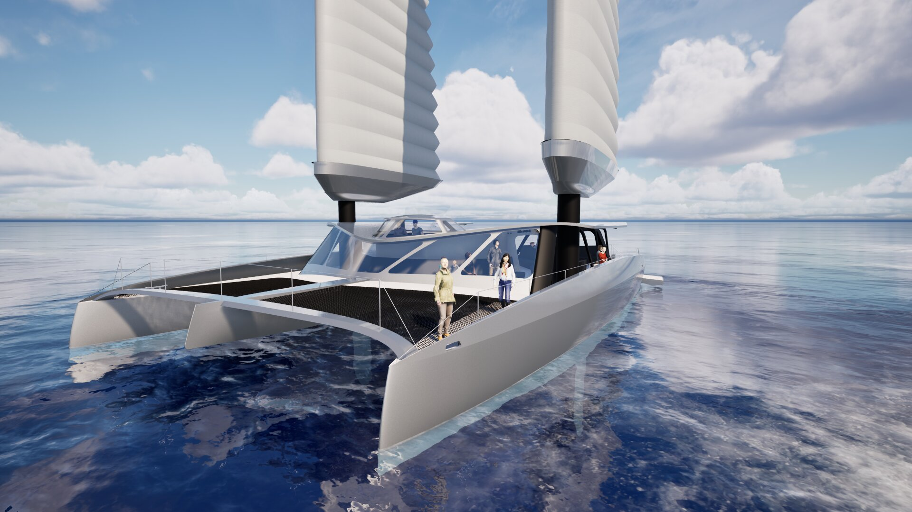

Nos services
Du conseil stratégique à la construction de navires hybrides, découvrez notre approche complète de la mobilité maritime régénératrice.

Projet Pilote
InSail.One : catamaran hybride de 24 m, 120 passagers. Notre vitrine technologique aux Canaries.
Découvrir
Get your concept
Concevez votre navire innovant en collaboration avec nos experts.

Conseil
Accompagnement stratégique pour la transition maritime durable.

Tourisme durable
Navettes premium pour un tourisme régénératif.